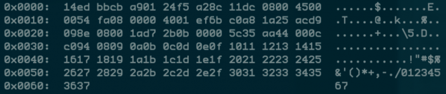

目录 [−]
原文: A tcpdump Tutorial with Examples — 50 Ways to Isolate Traffic
很好的整理，备查
tcpdump毫无无疑是首要的网络分析工具，因为它在一个工具中提供了强大的功能，而且还很简单。
本教程将向您展示如何以各种方式将流量基于IP、端口、协议、应用程序层协议分离(原文叫做isolate， 你可以理解为filter, 将网卡中的各种数据包进行筛选，只保留我们关注的数据包)出来，以确保您尽快找到所需的内容(也就是数据包的筛选)。
首先我们看一个分离HTTPS流量的简单命令:
1
2
3
4
5
6
04:45:40.573686 IP 78.149.209.110.27782 > 172.30 .0 .144.443 : Flags [.], ack
278239097 , win 28 , options [nop,nop,TS val 939752277 ecr 1208058112 ], length 0
0x0000 : 4500 0034 0014 0000 2 e06 c005 4 e8e d16e E ..4 ........N ..n
0x0010 : ac1e 00 90 6 c86 01 bb 8 e0a b73e 1095 9779 ....l......>...y
0x0020 : 8010 001 c d202 0000 0101 080a 3803 7 b55 ............8 .{U
0x0030 : 4801 8100
可以看到HTTPS的流量数据，左边是是十六进制，右边是ascii显示(当然它是加密的)。只要记住当你有所迟疑的时候，使用这个命令监控你感兴趣的端口，你就上路了。
既然你已经能够获取到流量数据，那么接下来介绍一些在实际工作中使用的命令例子。
网卡上的所有数据
运行下面的命令，监控一个指定的网络接口:
基于IP查找流量
最重要的查询之一就是host,你可以查看1.1.1.1上的进出流量:
1
2
3
4
06 :20 :25.593207 IP 172.30 .0.144 .39270 > one.one.one.one.domain:
12790 + A? google.com.
(28 ) 06 :20 :25.594510 IP one.one.one.one.domain > 172.30 .0.144 .39270 :
12790 1 /0 /0 A 172.217 .15.78 (44 )
根据来源和目标进行筛选
如果你只想看单一方向的流量，可以使用src和dst:
1
2
tcpdump src 1.1 .1.1
tcpdump dst 1.0 .0.1
根据网段进行查找
如果想查看某一网段或者子网的进出流量，可以:
使用十六进制输出
当你想检查包的内容是否有问题的时候，十六进制输出很有帮助。当你想仔细检查几个候选包的时候是最好的方法：

显示特定端口的流量
你可以使用 port 查找特定端口的流量:
1
2
tcpdump port 3389
tcpdump src port 1025
显示特定协议的流量
如果你想查看特定协议的流量，你可以使用tcp、udp、icmp等各种协议:
只显示 ipv6 的流量
通过协议参数可以查看所有ipv6的流量:
查看一个端口段的流量
你可以查看某一范围内的所有端口的流量：
基于包大小进行筛选
如果你正在查看特定大小的包，你可以使用这个参数。使用less、greater或者对应的数学符号:
1
2
3
tcpdump less 32
tcpdump greater 64
tcpdump <= 128
读写文件
经常需要将包存在文件中以便将来分析。这些文件叫做PCAP(PEE-cap)文件，它们可以被许许多多的工具进行分析，当然也包括tcpdump自己。
使用-w保存到文件:
1
tcpdump port 80 -w capture_file
你也可以使用-r从文件中读取。你可以使用各种参数分析文件中的包，但是显然你不可能处理文件中根本不存在的包：
前面几个例子我们介绍了tcpdump基本的功能，接下来我们介绍一些它的高级功能。
tcpdump还有一些参数：
-X : 同时显示包内容的ascii和十六进制数据-XX : 同上，但是还显示 ethernet header.-D : 显示所有可用网络接口的列表-l : 基于行的输出，便于你保存查看，或者交给其它工具分析-q : 使用较少的信息(more quiet),显示较少的协议信息-t : 便于查看的时间戳-tttt : 最容易查看的时间戳-i eth0 : 监听eth0网络接口-vv : 更多输出信息 (v越多输出信息越多).-c : 只捕获 x 个包，然后就停止-s : 定义包获取的字节大小.使用-s0获取完整的包-S : 打印出绝对sequence numbers-e : 还获取ethernet header-E : 揭秘IPSEC数据
当然还有一些其它不太常用的参数。
单独使用一个参数就很强大了，但是tcpdump的魔力就在于可以创造性的组合参数，以便准确的分离出你想查找的包。有三种方式可以组合，只要你稍微有点编程基础就很容易理解。
AND and 或者 &&OR or 或者说 ||EXCEPT not 或者 !
原始数据输出
使用组合参数查看详细输出，不要解决主机名或者端口号，使用绝对序列号，显示容易阅读的时间戳:
下面是几个组合的例子。
来自特定的IP,发往特定的端口
来自10.5.2.3,发往任意主机的3389端口的包:
1
tcpdump -nnvvS src 10.5 .2.3 and dst port 3389
从某个网段来，到某个网段去
来自192.168.x.x子网，发往10.x和172.16.x.x。显示十六进制，无需翻译主机名，一个v的详细信息。
1
tcpdump -nvX src net 192.168 .0.0 /16 and dst net 10.0 .0.0 /8 or 172.16 .0.0 /16
到某个IP的非ICMP流量
发往192.168.0.2,非icmp流量。
1
tcpdump dst 192.168 .0.2 and src net and not icmp
###来自某个主机，发往排除的端口
来自mars主机，发往非SSH端口。
1
tcpdump -vv src mars and not dst port 22
如你所见，你可以组合查询你所需的所有的数据。关键是你要准确弄清楚你要查找什么数据，然后准备查询去分离数据。
注意当你构建复杂查询的时候，你可能需要使用引号。单引号告诉tcpdump忽略特定的特殊字符，如下面的例子中的括号。
1
tcpdump 'src 10.0.2.4 and (dst port 3389 or 22)'
根据 TCP Flags 分离数据
例如使用TCP RST flag筛选:
1
2
tcpdump 'tcp[13] & 4!=0'
tcpdump 'tcp[tcpflags] == tcp-rst'
根据 TCP SYN flag筛选
1
2
tcpdump 'tcp[13] & 2!=0'
tcpdump 'tcp[tcpflags] == tcp-syn'
根据 TCP SYN和ACK flag筛选
根据 TCP URG flag筛选
1
2
tcpdump 'tcp[13] & 32!=0'
tcpdump 'tcp[tcpflags] == tcp-urg'
根据 TCP ACK flag筛选
1
2
tcpdump 'tcp[13] & 16!=0'
tcpdump 'tcp[tcpflags] == tcp-ack'
根据 TCP PSH flag筛选
1
2
tcpdump 'tcp[13] & 8!=0'
tcpdump 'tcp[tcpflags] == tcp-psh'
根据 TCP FIN flag筛选
1
2
tcpdump 'tcp[13] & 1!=0'
tcpdump 'tcp[tcpflags] == tcp-fin'
根据 SYN 和RST筛选
发现 HTTP User Agent
1
tcpdump -vvAls0 | grep 'User-Agent:'
GET 请求
1
tcpdump -vvAls0 | grep 'GET'
HTTP Host
1
tcpdump -vvAls0 | grep 'Host:'
HTTP Cookie
1
tcpdump -vvAls0 | grep 'Set-Cookie|Host:|Cookie:'
SSH 连接
1
tcpdump 'tcp[(tcp[12]>>2):4] = 0x5353482D'
DNS流量
FTP流量
1
tcpdump -vvAs0 port ftp or ftp-data
NTP流量
密码
1
tcpdump port http or port ftp or port smtp or port imap or port pop3 or port telnet -l A | egrep -i -B5 'pass=|pwd=|log=|login=|user=|username=|pw=|passw=|passwd= |password=|pass:|user:|username:|password:|login:|pass |user '
根据 evil bit筛选
IP header中有一个bit从来没有被用过，我们叫它evil bit.可以筛选设置它的包
1
tcpdump 'ip[6] & 128 != 0'